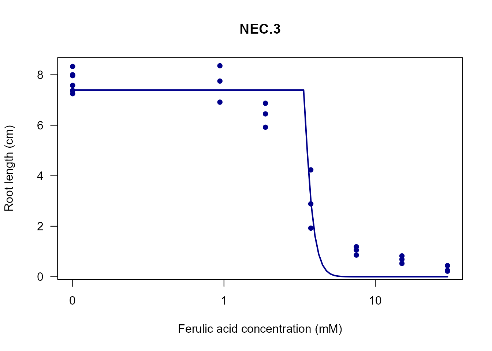
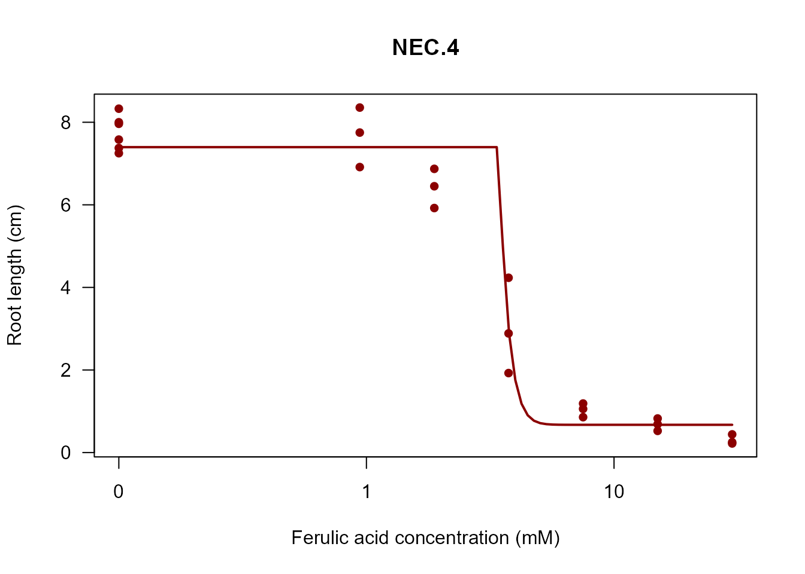

Understanding NEC Models in the drc Package
Hannes Reinwald
2026-03-18
Source:vignettes/nec-models.Rmd
nec-models.RmdExecutive Summary
The drc R package contains 4 NEC (No Effect
Concentration) functions: NEC, NEC.2,
NEC.3, and NEC.4. After thorough analysis,
all functions are necessary and serve distinct
purposes. There is no redundancy.
Introduction
The No Effect Concentration (NEC) model is a dose-response model with a threshold below which the response is assumed constant and equal to the control response. It has been proposed as an alternative to both the classical NOEC (No Observed Effect Concentration) and the regression-based EC/ED approach (Pires et al., 2002).
This vignette explains the differences between the four NEC functions available in the drc package and provides guidance on when to use each variant.
The NEC Model Equation
The NEC model function proposed by Pires et al. (2002) is:
where is an indicator function equal to 0 for and 1 for .
Model Parameters
- b: Slope/rate parameter controlling the steepness of the dose-response curve above the threshold
- c: Lower limit (control response) - the response level below the threshold
- d: Upper limit (maximum response) - the asymptotic response at high doses
- e: NEC threshold (no effect concentration) - the dose below which there is no effect
Function Overview
Base Implementation: NEC (Not Exported)
The NEC function is the core implementation that
provides the flexible NEC dose-response model. It is not
exported in the package NAMESPACE and serves as an internal
implementation engine.
Key Features:
- Accepts a
fixedargument to specify which parameters should be fixed - Uses log-logistic self-starter function for initialization
- Returns a model list with nonlinear function, self starter, and parameter names
This function is called internally by all the numbered variants (NEC.2, NEC.3, NEC.4) with specific parameter constraints.
NEC.2: Two-Parameter NEC Model
Purpose: Convenience wrapper for highly constrained scenarios where both lower and upper limits are known.
Free Parameters: 2
-
b: Slope parameter -
e: NEC threshold
Fixed Parameters:
-
c: Fixed at 0 -
d: Fixed at user-specified value (default 1)
Use Cases:
- Response bounded on a known scale (e.g., 0-1 for proportions, 0-100 for percentages)
- Both bounds are well-defined from experimental design
- Focus estimation on slope and threshold only
- Reduces model complexity and improves parameter identifiability
Example:
# Example with proportion data (bounded 0-1)
# Using ryegrass data, normalizing to 0-1 scale
data(ryegrass)
ryegrass$prop_rootl <- ryegrass$rootl / max(ryegrass$rootl)
# Fit NEC.2 model with upper limit fixed at 1
nec2.model <- drm(prop_rootl ~ conc, data = ryegrass, fct = NEC.2())
summary(nec2.model)
#>
#> Model fitted: NEC with lower limit at 0 and upper limit at 1 (2 parms)
#>
#> Parameter estimates:
#>
#> Estimate Std. Error t-value p-value
#> b:(Intercept) 0.303610 0.035141 8.6397 1.609e-08 ***
#> e:(Intercept) 0.751527 0.156092 4.8146 8.261e-05 ***
#> ---
#> Signif. codes: 0 '***' 0.001 '**' 0.01 '*' 0.05 '.' 0.1 ' ' 1
#>
#> Residual standard error:
#>
#> 0.08003264 (22 degrees of freedom)NEC.3: Three-Parameter NEC Model
Purpose: Most common variant - assumes zero baseline response with variable maximum.
Free Parameters: 3
-
b: Slope parameter -
d: Upper limit -
e: NEC threshold
Fixed Parameters:
-
c: Fixed at 0
Use Cases:
- Standard toxicological/biological scenarios
- Baseline response is zero (no treatment/exposure)
- Maximum response varies by treatment
- Balances flexibility with model stability
- Reduces overfitting compared to NEC.4
Example:
# Fit NEC.3 model - most common case
# Assumes zero baseline response
nec3.model <- drm(rootl ~ conc, data = ryegrass, fct = NEC.3())
summary(nec3.model)
#> Warning in sqrt(diag(varMat)): NaNs produced
#>
#> Model fitted: NEC with lower limit at 0 (3 parms)
#>
#> Parameter estimates:
#>
#> Estimate Std. Error t-value p-value
#> b:(Intercept) 2.54094 NaN NaN NaN
#> d:(Intercept) 7.39655 0.23498 31.477 < 2.2e-16 ***
#> e:(Intercept) 3.39679 NaN NaN NaN
#> ---
#> Signif. codes: 0 '***' 0.001 '**' 0.01 '*' 0.05 '.' 0.1 ' ' 1
#>
#> Residual standard error:
#>
#> 0.81401 (21 degrees of freedom)
# Plot the fitted model
plot(nec3.model, type = "all", log = "",
main = "NEC.3 Model for Ryegrass Root Length",
xlab = "Ferulic acid concentration (mM)",
ylab = "Root length (cm)")NEC.4: Four-Parameter NEC Model
Purpose: Full flexibility - all parameters estimated from data.
Free Parameters: 4
-
b: Slope parameter -
c: Lower limit -
d: Upper limit -
e: NEC threshold
Use Cases:
- No biological constraints on parameters
- Both baseline and maximum responses vary
- Model selection and comparison workflows
- Maximum flexibility when data supports it
- Cases where control/baseline response is non-zero and unknown
Example:
# Fit NEC.4 model - full flexibility
nec4.model <- drm(rootl ~ conc, data = ryegrass, fct = NEC.4())
summary(nec4.model)
#>
#> Model fitted: NEC (4 parms)
#>
#> Parameter estimates:
#>
#> Estimate Std. Error t-value p-value
#> b:(Intercept) 3.16938 393.27265 0.0081 0.993650
#> c:(Intercept) 0.67201 0.23463 2.8641 0.009592 **
#> d:(Intercept) 7.39666 0.20260 36.5091 < 2.2e-16 ***
#> e:(Intercept) 3.41729 41.27705 0.0828 0.934842
#> ---
#> Signif. codes: 0 '***' 0.001 '**' 0.01 '*' 0.05 '.' 0.1 ' ' 1
#>
#> Residual standard error:
#>
#> 0.7017905 (20 degrees of freedom)
# Compare parameter estimates
coef(nec4.model)
#> b:(Intercept) c:(Intercept) d:(Intercept) e:(Intercept)
#> 3.1693834 0.6720099 7.3966630 3.4172914Comparison of NEC Variants
The following table summarizes the key differences between the NEC functions:
| Aspect | NEC (base) | NEC.2 | NEC.3 | NEC.4 |
|---|---|---|---|---|
| Exported | No | Yes | Yes | Yes |
| Free Parameters | Configurable | 2 (b, e) | 3 (b, d, e) | 4 (b, c, d, e) |
| Fixed c (lower) | Configurable | 0 | 0 | Free |
| Fixed d (upper) | Configurable | User-defined | Free | Free |
| Model Complexity | Depends | Lowest | Medium | Highest |
| When to Use | Internal only | Known bounds | Zero baseline | Full flexibility |
| Identifiability | Depends | Excellent | Good | May be challenging |
Model Comparison Example
Let’s compare the three exported NEC variants on the ryegrass dataset:
# Fit all three models
nec2.fit <- drm(rootl ~ conc, data = ryegrass, fct = NEC.2(upper = max(ryegrass$rootl)))
nec3.fit <- drm(rootl ~ conc, data = ryegrass, fct = NEC.3())
nec4.fit <- drm(rootl ~ conc, data = ryegrass, fct = NEC.4())
# Compare models using AIC
cat("Model Comparison (AIC values):\n")
#> Model Comparison (AIC values):
cat("NEC.2:", AIC(nec2.fit), "\n")
#> NEC.2: 52.70586
cat("NEC.3:", AIC(nec3.fit), "\n")
#> NEC.3: 63.02673
cat("NEC.4:", AIC(nec4.fit), "\n")
#> NEC.4: 56.73556
# Plot all three models together
my_plot = function(mod, col = "black", lwd = 2, pch = 16) {
plot(mod, type = "all",
main = mod$fct$name,
col = col, lwd = lwd, pch = pch,
xlab = "Ferulic acid concentration (mM)",
ylab = "Root length (cm)")
}
my_plot(nec2.fit)
my_plot(nec3.fit, col = "darkblue", lwd = 2)
my_plot(nec4.fit, col = "darkred", lwd = 2)
Design Pattern in the drc Package
The NEC functions follow the standard drc package design pattern used consistently across all model families:
Examples of Similar Patterns:
-
Log-logistic models:
llogistic,LL.2,LL.3,LL.3u,LL.4,LL.5 -
Weibull type 1:
weibull1,W1.2,W1.3,W1.3u,W1.4 -
Weibull type 2:
weibull2,W2.2,W2.3,W2.3u,W2.4 -
Gompertz:
gompertz,G.2,G.3,G.3u,G.4 -
Log-normal:
lnormal,LN.2,LN.3,LN.3u,LN.4
Pattern Structure:
-
Base function (e.g.,
llogistic,NEC)- Provides core implementation with full parameter flexibility
- Often not exported (used internally)
- Accepts
fixedargument for parameter constraints
-
Numbered variants (e.g.,
LL.2,LL.3,LL.4,LL.5)- Convenience wrappers with common parameter combinations
- Exported for user convenience
- Number indicates count of free parameters
- Each serves specific biological/experimental scenarios
Benefits of This Design:
- User convenience: Common cases are easy to specify
- Parameter identifiability: Constraining parameters when appropriate improves estimation
- Model selection: Easy to compare nested models
- Biological meaning: Parameter constraints reflect experimental knowledge
- Backwards compatibility: Adding variants doesn’t break existing code
- Documentation clarity: Each variant can have specific use-case documentation
Choosing the Right NEC Variant
Here’s a decision guide to help you choose the appropriate NEC function:
-
Do you know both the lower and upper response
limits?
- Yes → Use NEC.2
- No → Go to step 2
-
Is your baseline (control) response zero or can it be
assumed to be zero?
- Yes → Use NEC.3 (most common case)
- No → Go to step 3
-
Do you need to estimate all parameters from the
data?
- Yes → Use NEC.4
- Unsure → Start with NEC.3 and compare with NEC.4 using model selection criteria (AIC, BIC)
Example Decision Process:
# Toxicology study with percentage mortality (0-100%)
# Known bounds: lower = 0%, upper = 100%
# → Use NEC.2
mortality.model <- drm(mortality ~ dose, data = mydata, fct = NEC.2(upper = 100))
# Plant growth study measuring root length
# Control (no treatment) shows some growth (not zero)
# → Try both NEC.3 and NEC.4, compare with AIC
model3 <- drm(rootlength ~ concentration, data = mydata, fct = NEC.3())
model4 <- drm(rootlength ~ concentration, data = mydata, fct = NEC.4())
mselect(model3, model4)
# Standard dose-response with zero baseline
# Maximum response unknown
# → Use NEC.3
response.model <- drm(response ~ dose, data = mydata, fct = NEC.3())Redundancy Assessment
Reasoning:
-
NEC (base function)
- Cannot be removed: Contains the actual mathematical implementation
- All other functions are wrappers that call
NECwith specific constraints - Removing it would break NEC.2, NEC.3, and NEC.4
-
NEC.2
- Unique purpose: Only variant with both upper and lower limits fixed
- Distinct use case: Bounded response scales (proportions, percentages)
- Cannot be replicated: NEC.3 fixes only lower limit, NEC.4 fixes nothing
- Statistical benefit: Reduces parameters from 4 to 2, greatly improving identifiability
-
NEC.3
- Most common scenario: Standard toxicology with zero baseline
- Optimal balance: More flexible than NEC.2, more stable than NEC.4
- Common convention: Matches typical experimental designs where control = 0
- Unique constraint: Only variant fixing lower limit while freeing upper limit
-
NEC.4
- Essential for flexibility: Only way to estimate all 4 parameters
- Model selection: Needed for comparing against constrained models
- Non-zero baselines: Only option when control response is unknown and non-zero
- Diagnostic tool: Helps determine if constraints are appropriate
User Experience Comparison:
If functions were combined, users would need to manually specify constraints:
# Current approach (user-friendly):
drm(y ~ x, data = mydata, fct = NEC.3())
# If combined (cumbersome and error-prone):
drm(y ~ x, data = mydata, fct = NEC(fixed = c(NA, 0, NA, NA)))The current design: - Reduces usability barriers - Prevents errors from wrong constraint specifications - Provides helpful documentation for common cases - Maintains backwards compatibility - Follows established drc package conventions
Practical Tips
1. Starting with Model Selection
When unsure which variant to use, start with NEC.3 (most common) and compare with other variants:
2. Checking Parameter Identifiability
If your NEC.4 model shows very large standard errors or fails to converge, consider constraining parameters:
Conclusion
All 4 NEC functions serve distinct and necessary purposes in the drc package:
- NEC: Internal implementation engine
- NEC.2: Highly constrained models with known bounds (2 parameters)
- NEC.3: Standard case with zero baseline (3 parameters) - most commonly used
- NEC.4: Full flexibility for complex scenarios (4 parameters)
The design represents:
- Sound software architecture: Internal implementation separated from user interface
- Statistical best practice: Providing appropriate model complexity for different scenarios
- User experience optimization: Common cases are simple, complex cases are possible
- Package consistency: Matches the established pattern used for all other model families